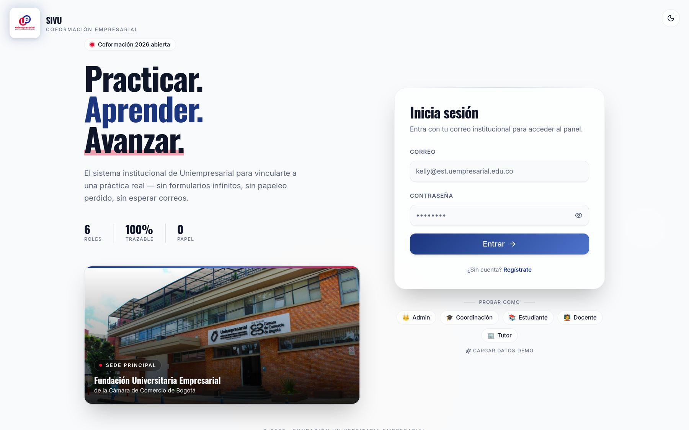

La plataforma que digitaliza y automatiza el proceso de Coformación Empresarial de Uniempresarial: los 5 documentos oficiales, los 3 cortes y el agendamiento, en un solo lugar.

Formatos en Excel y Word, enviados por correo, con seguimiento manual. El estudiante no ve el estado de su trámite y las reuniones se coordinan por WhatsApp.
Los 5 formatos se diligencian dentro de la plataforma y se generan como PDF oficial. Notificaciones automáticas, expediente digital y agendamiento colaborativo.
Crea y firma el Plan, redacta y entrega el Informe Final, propone reuniones y pide revisión con IA.
Crea, edita y firma las Actas, publica su disponibilidad y responde reuniones, comenta y firma el Plan.
Diligencia y firma la Evaluación del Tutor, califica el Informe, participa y firma el Plan, ve sus actas/reuniones. (Cuenta o token externo.)
Asigna la práctica, registra la Evaluación del Docente, aprueba/rechaza el Informe y consolida las notas.
Además de estos 4 actores del proceso, el rol 👑 Admin administra los usuarios del sistema y asigna roles.
Evaluación del Docente (corte 1).
Evaluación del Docente (corte 2).
Promedio de Evaluación del Tutor + Informe Final.
Cada tecnología cumple un rol concreto en la solución:
El navegador consume una API REST con JWT. El backend orquesta la lógica, las dos bases de datos, los PDF, la IA y el MCP. Cada push a master que pasa las pruebas se despliega solo.
Ejemplo real: el estudiante envía su Plan de Actividades (GAC-FM-10).
React valida los datos y envía la petición al backend con el token de sesión.
Valida el token JWT, comprueba el rol con @PreAuthorize y aplica las reglas; persiste en PostgreSQL.
El plan y sus objetivos y meses cuelgan del trimestre del convenio (integridad por llaves foráneas).
Avisa a docente y tutor. Cuando los tres firman, OpenPDF genera el PDF oficial y lo guarda en el expediente.
TanStack Query refresca el expediente con el nuevo estado y el PDF descargable.
El enunciado exige PostgreSQL para el core y otra tecnología para los usuarios. Usamos los dos modelos que existen: uno relacional y uno no relacional.
🔑 primaria · 🔗 foránea · snake_case · PK id BIGSERIAL · FK <tabla>_id. Se lee de izquierda a derecha.
En Mongo no hay tablas ni JOINs: cada usuario es un documento con sus campos anidados. Los enlaces al dominio (Postgres) son simples referencias por id.
// un usuario = un documento autocontenido { "email": "cmendoza@uempresarial.edu.co", "passwordHash": "$2a$10$…", // BCrypt "roles": ["DOCENTE"], // arreglo embebido "estudianteId": null, "empresaId": null, "tutorId": 1 // referencia lógica al tutor en Postgres }
Cada documento lleva solo los campos que necesita (un estudiante trae estudianteId, un tutor trae tutorId).
El login busca por email y trae todo el usuario en una sola lectura, sin unir tablas.
ADMIN·COORDINADOR·ESTUDIANTE·DOCENTE·TUTOR·MCP_AGENT viven embebidos en el propio documento.
Cada dominio es una carpeta con sus 4 capas — web → service → domain → persistence — así el código es fácil de ubicar y probar.
La IA resuelve una necesidad real: mejorar los documentos antes de entregarlos. Hace dos cosas:
1. Revisa la coherencia del Plan (objetivos vs actividades).
2. Da feedback del Informe Final (secciones vacías, claridad).
Corre en un sidecar con el plan de Claude Code. Si no está, el backend usa un revisor local de respaldo.
Claude Desktop se conecta por stdio al MCP Server; cada herramienta llama a la API del backend y responde en el chat. 9 herramientas:
Ej: “¿cuántos expedientes van completos?” → el MCP consulta el backend → tabla en el chat.
El enunciado pide elegir IA (7) o MCP (8) — implementamos MCP y además dejamos la IA como complemento.
Trabajamos en ramas. La CI valida cada Pull Request y, al mergear a master, la CD despliega sola — nadie sube nada a mano.
on: push: { branches: [ master ] } # merge a master → CI + CD (despliega) pull_request: { branches: [ master ] } # cada PR → solo CI (valida, NO despliega) concurrency: { cancel-in-progress: true } # si subes otro commit, cancela el run viejo
El deploy tiene needs: [backend, frontend, mcp, api-contract, e2e]. Si un solo job falla, no despliega: producción nunca recibe código roto.
PR → solo CI (build + pruebas). Push a master → CI + Docker→GHCR + CD (Render + Vercel).
Levanta Postgres 16 + Mongo 7 reales y corre mvn clean verify: compila y ejecuta las 21 pruebas JUnit (Jwt · Auth · Estudiante · Evaluación) + cobertura JaCoCo.
mvn sonar:sonar → SonarCloud. En paralelo, Newman corre la colección Postman (login, 401, CRUD, 422…) contra el backend levantado.
build-push-action con context ./backend (Dockerfile multi-stage) publica ghcr.io/jaydethsp01/sivu/backend.
La CD llama la Deploy API de Render por curl → redespliega el backend y el IA sidecar.
backend: services: { postgres:16, mongo:7 } # BD reales para los tests de integración steps: - working-directory: backend run: mvn -B clean verify # compila + 21 JUnit + JaCoCo - working-directory: backend run: mvn sonar:sonar # SonarCloud deploy: # solo en master, tras la compuerta run: curl -X POST …/services/$RENDER_BACKEND_ID/deploys # backend → Render run: curl -X POST …/services/$RENDER_SIDECAR_ID/deploys # IA sidecar → Render
Una SPA en React con la misma organización por features que el backend. Cada rol ve solo lo suyo.
Un interceptor de Axios añade el Bearer JWT a cada llamada; TanStack Query cachea la respuesta y la invalida al mutar, así el expediente se refresca solo.
npm install --legacy-peer-deps + npm run build → tsc chequea los tipos y Vite genera el dist/. Falla si hay un error de tipos.
El job levanta el jar del backend (java -jar) y sirve el dist; luego cypress run valida 3 flujos de verdad: 01-auth, 02-estudiantes, 03-coformacion.
build-push-action con context ./frontend publica ghcr.io/jaydethsp01/sivu/frontend.
Construye con VITE_API_BASE_URL al backend de Render, hace vercel deploy --prod y fija el alias sivu-platform.vercel.app.
frontend: working-directory: frontend run: npm install --legacy-peer-deps && npm run build # tsc + Vite → dist/ e2e: # prueba contra el stack real run: java -jar backend/target/sivu-backend.jar & # levanta el backend working-directory: tests/cypress run: npx cypress run --browser chrome deploy: working-directory: frontend # solo en master env: { VITE_API_BASE_URL: https://sivu-backend.onrender.com/api/v1 } run: npx vercel deploy dist --prod && vercel alias set … sivu-platform.vercel.app
Cinco tipos de prueba se ejecutan en el pipeline. Si una sola falla, la compuerta no despliega.
Simula carga concurrente de login y mide latencia y tasa de error del backend.
Las 33 migraciones se aplican y validan sobre una BD fresca al arrancar el backend en CI.
Coformación sin papeleo — funcional, integrado y desplegado de forma continua.